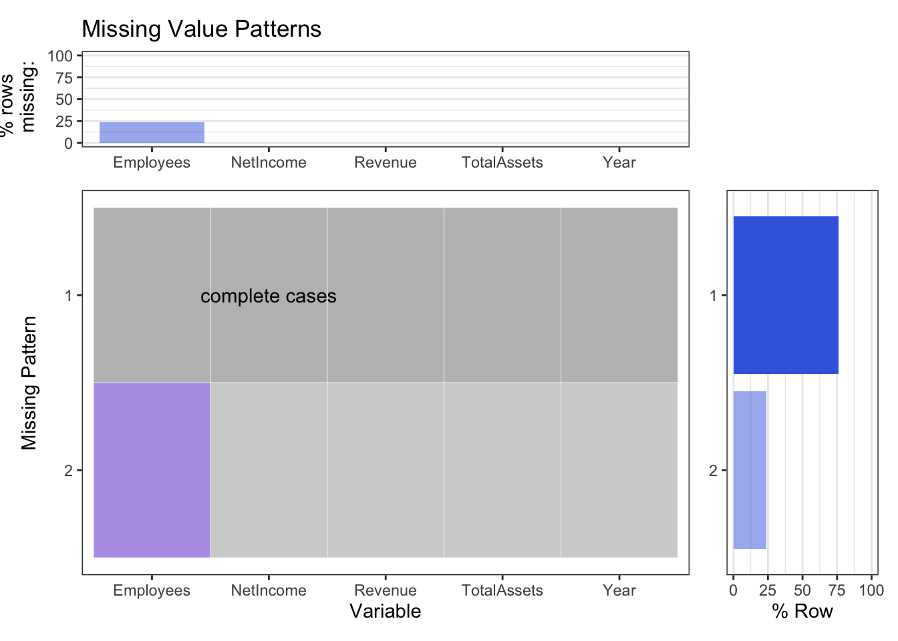

Chapter 4 Missing values
4.1 Missing Values Patterns Plots
For this section, we did the missing value analysis on the finance table we found on wikipedia.
Missing Values Patterns Plots for Counts
Missing Values Patterns Plots for Percent 
4.2 Reasoning and Intepretation
We want to discover the reason behind the missing values, so we first print out the missing patterns of the finance table.
## Year Revenue NetIncome TotalAssets Employees
## Min. :2000 Min. : 5363 Min. : -25 Min. : 6021 Min. : 14800
## 1st Qu.:2005 1st Qu.: 13931 1st Qu.: 1328 1st Qu.: 11516 1st Qu.: 33725
## Median :2010 Median : 65225 Median :14013 Median : 75183 Median : 76550
## Mean :2010 Mean :111160 Mean :23818 Mean :142555 Mean : 77388
## 3rd Qu.:2015 3rd Qu.:215639 3rd Qu.:45687 3rd Qu.:290345 3rd Qu.:117750
## Max. :2020 Max. :274515 Max. :59531 Max. :375319 Max. :147000
## NA's :5## Year Revenue NetIncome TotalAssets Employees
## 1 FALSE FALSE FALSE FALSE TRUE
## 2 FALSE FALSE FALSE FALSE TRUE
## 3 FALSE FALSE FALSE FALSE TRUE
## 4 FALSE FALSE FALSE FALSE TRUE
## 5 FALSE FALSE FALSE FALSE TRUE
## 6 FALSE FALSE FALSE FALSE FALSE
## 7 FALSE FALSE FALSE FALSE FALSE
## 8 FALSE FALSE FALSE FALSE FALSE
## 9 FALSE FALSE FALSE FALSE FALSE
## 10 FALSE FALSE FALSE FALSE FALSE
## 11 FALSE FALSE FALSE FALSE FALSE
## 12 FALSE FALSE FALSE FALSE FALSE
## 13 FALSE FALSE FALSE FALSE FALSE
## 14 FALSE FALSE FALSE FALSE FALSE
## 15 FALSE FALSE FALSE FALSE FALSE
## 16 FALSE FALSE FALSE FALSE FALSE
## 17 FALSE FALSE FALSE FALSE FALSE
## 18 FALSE FALSE FALSE FALSE FALSE
## 19 FALSE FALSE FALSE FALSE FALSE
## 20 FALSE FALSE FALSE FALSE FALSE
## 21 FALSE FALSE FALSE FALSE FALSEAs we can see from the missing pattern table, the missing values of employees occur in the first five rows. Since our year column is in chronological order, we know that the five missing rows in Employees column is positively correlated with the year column. Therefore, we want to print out the first five missing rows and the next few employees rows without missing values. By comparing the values of these rows, we may discover the reason behind the missing values in Employees column in the first five years.
## # A tibble: 6 × 5
## Year Revenue NetIncome TotalAssets Employees
## <dbl> <dbl> <dbl> <dbl> <dbl>
## 1 2000 7983 786 6803 NA
## 2 2001 5363 -25 6021 NA
## 3 2002 5742 65 6298 NA
## 4 2003 6207 69 6815 NA
## 5 2004 8279 274 8050 NA
## 6 2005 13931 1328 11516 14800After we apply the plot_missing function on the finance table from Wikipedia, we find that Apple’s finance table only has two missing patterns, and the missing values are all occurred in the employee’s column. Also, by looking at the top plot of the missing graph, we find out that there are five rows of missing values in the finance table. The year of these missing values is from 2000 to 2004, which is very early, so the employee’s data could be missing. This could be one of the main reasons.
From 2004 to 2005, we can see that the change is more significant compared to the changes in previous years. Thus, we think another possible reason could be that from 2000 - 2004, the number of employees does not matter too much; while from 2004-2005, the company’s rapid development, more information is needed. So since then, the number of employees started to be collected.